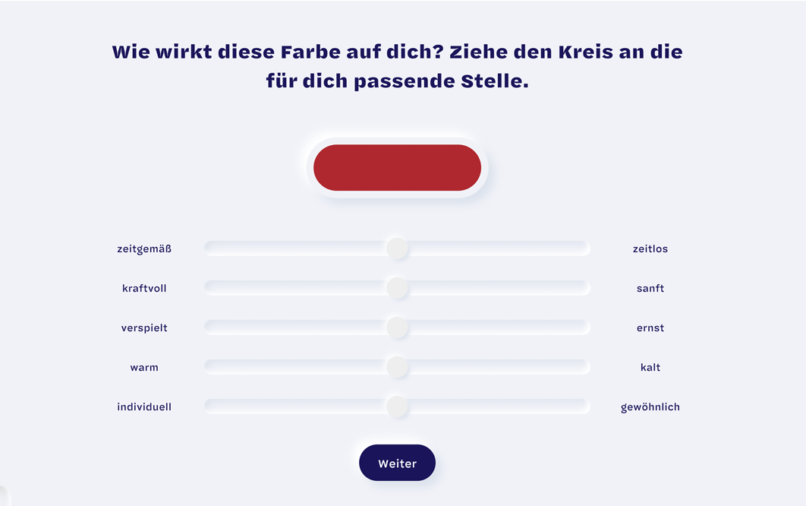

Was ist ColorCode?
Die Feuerwehr ist rot, Banken sind blau, Bio ist grün. Farbcodes begegnen uns in unserem Alltag immerzu. Wir sind umgeben von farbigen Produkten, die aus einem bestimmten Grund genau diese Farbe haben. Aber warum genau diese Farbe?
Designer sehen sich in ihrem Gestaltungsprozess oft mit dieser Frage konfrontiert. Wie muss eine Farbe aussehen, die eine ganz bestimmte Wirkung haben soll?
Die Antwort hierfür wollen wir* mithilfe von Machine Learning finden. Dabei wird ein Neuronales Netz mit einem großen Datenset trainiert, um am Ende Gesetzmäßigkeiten festzustellen und Konklusionen daraus abzuleiten.
Um dieses Datenset zu generieren, brauchen wir deine Hilfe! Es geht darum, einzelnen Farben Adjektive zuzuordnen. Das passiert, indem du die Regler in unserem Spiel in die jeweilige Richtung bewegst – so, wie die jeweilige Farbe auf dich wirkt. In dieser Weise nimmst du direkten Einfluss darauf, wie die Maschine trainiert wird, also gib alles! Ein Richtig oder Falsch gibt es nicht!
Wie du die Farben zuordnest ist ganz dir überlassen.
Für jede zugeordnete Farbe gibt es Punkte, die sich mit jedem Level steigern. Ziel ist es, möglichst viele Punkte zu ergattern, um auf der Bestenliste ganz oben zu landen. Wirst du unser Color-König?

So einfach geht die Zuordnung, einfach die Kreise an die jeweilige Stelle ziehen.
Wer steckt hinter dem Spiel?
*Wir, das sind Xinlei, Jamin und Elli. Wir studieren Interaktionsgestaltung an der HfG in Schwäbisch Gmünd. Im Rahmen eines Projektes
beschäftigen wir uns mit Machine Learning. Danke, wenn du uns bei unserem Projekt unterstützt!